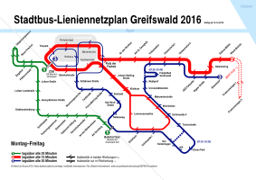
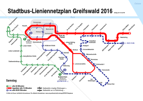
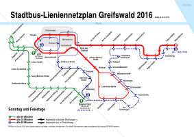

Past maps and pages
The following are older versions of existing map pages, and other pages that are unlikely to be updated.
Greifswald 2016
Stadtbus-Lieniennentzplan Greifswald 2016, Montag–Freitag

Stadtbus-Lieniennentzplan Greifswald 2016, Samstag

Stadtbus-Lieniennentzplan Greifswald 2016, Sonntag

Back to Hobby
Back to Network Maps